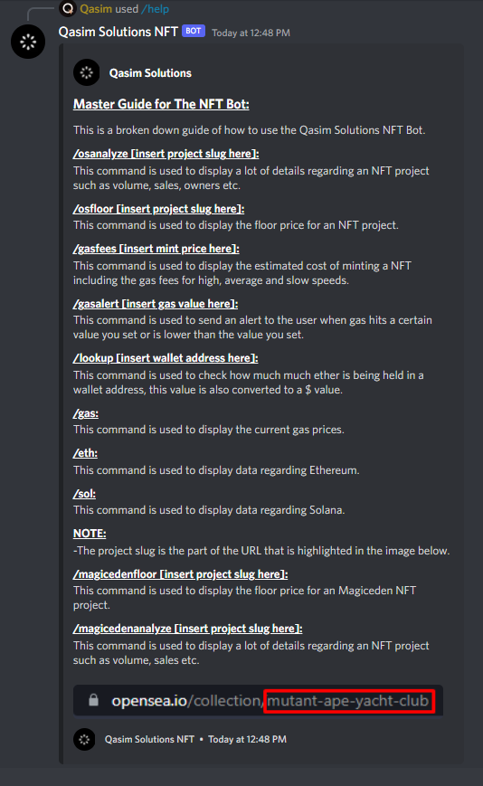

NFT Discord Bot Breakdown
The NFT Discord Bot contains a ton of commands that allow the user to retrieve a ton of information after executing a single command. It is part of a paid service that I offer to NFT communities hosted on Discord, with the purchase of the bot the customer will be able to completely customize their bot with their own branding. They can also suggest new commands to be made or new data to be displayed as part of the existing commands. The commands were made with NFT communities in mind, which is why the commands include NFT collection focussed data but also data regarding relevant cryptocurrencies such as Ethereum and Solana. I showcase a few of the commands from the NFT Discord bot in the video below, if you want to see a complete list of commands available, view the image on the right side of the page